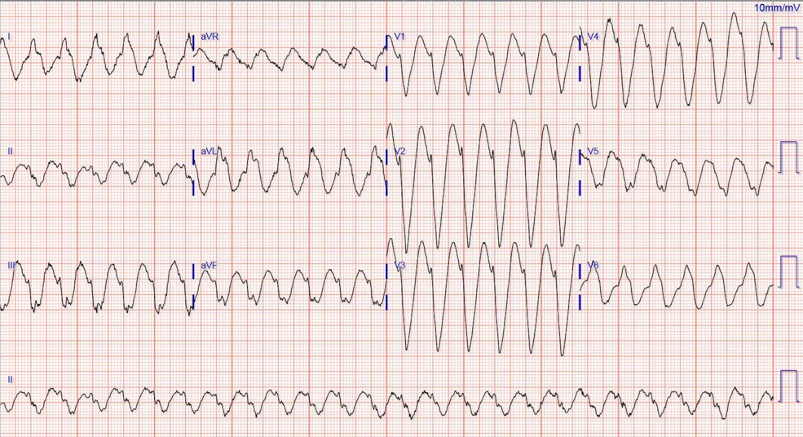
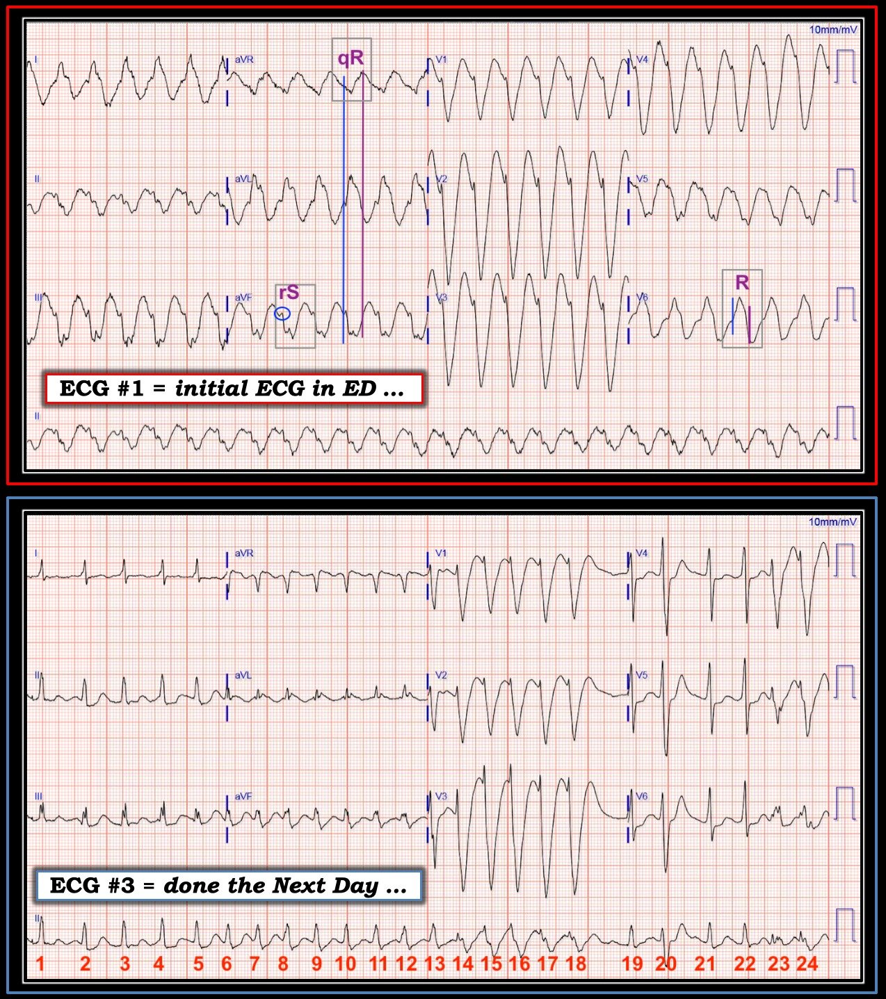

16/12/2018 — Nhịp nhanh QRS rộng: VT, dẫn truyền lệch hướng, hay “nguyên nhân khác?”
Bản dịch tiếng Việt của bài "Wide-complex tachycardia: VT, aberrant, or “other?”" – Dr. Smith’s ECG Blog. Giữ nguyên toàn bộ 7 hình ảnh của bản gốc.
Nhịp nhanh QRS rộng: VT hay dẫn truyền lệch hướng, hay “nguyên nhân khác?”
Ca bệnh này do Brooks Walsh đóng góp, một bác sĩ cấp cứu và chuyên gia điện tâm đồ đến từ Connecticut.
Ca bệnh
Một phụ nữ lớn tuổi đến khoa cấp cứu (ED) vì khó thở, vã mồ hôi và cảm giác đè nặng ngực.
Bệnh nhân có tiền sử rung nhĩ kịch phát và đã được sốc điện chuyển nhịp nhiều lần. Bà có phân suất tống máu (EF) bình thường, không có bệnh động mạch vành (CAD) đáng kể, và đang dùng flecainide để ức chế AF.
Điện tâm đồ ban đầu:


Một nhịp nhanh QRS rộng ở bệnh nhân lớn tuổi phải ngay lập tức gợi ý nhịp nhanh thất. Và quả thật hình thái QRS ủng hộ mạnh mẽ VT (ví dụ: khoảng R-S lớn hơn 60 ms, và aVR có sóng R khởi đầu rộng). Flecainide được biết rõ là có thể khởi phát VT.
Tuy nhiên, chúng tôi đã cân nhắc một nguyên nhân trên thất. Nhịp nhanh xoang kèm dẫn truyền lệch hướng khó xảy ra vì tần số luôn ở mức 150 nhịp/phút, không có dao động tự phát.
Thay vào đó, tần số 150, cùng với tiền sử AF, gợi ý cuồng nhĩ. Quan sát kỹ chuyển đạo II thấy sóng P hoặc sóng cuồng nhĩ với tần số khoảng 300 nhịp/phút, cũng ủng hộ cuồng nhĩ.
Tần số cuồng nhĩ nhanh như vậy khi đang dùng flecainide là bất thường, vì flecainide thường làm chậm dẫn truyền trong nhĩ (tần số chậm như vậy có thể dẫn đến dẫn truyền 1:1)
Một liều thử adenosine được dùng để tìm sóng cuồng nhĩ. Tiêm nhanh 12 mg gây ra đầy đủ đáp ứng triệu chứng (thở hắt, đau ngực, lo sợ), nhưng tần số không hề nhúc nhích. Đây là một bằng chứng khá mạnh rằng nhịp này KHÔNG phải trên thất, mà quả thật là VT.
Các thủ thuật chẩn đoán tiếp theo được hoãn lại. Sốc điện chuyển nhịp đồng bộ với mức 360J hai pha cho kết quả:
Nhịp xoang với PR kéo dài, nhưng QRS hẹp.
Vậy rốt cuộc đây có phải là VT không?
Thông thường, việc diễn giải nhịp nhanh QRS rộng được đặt ra như là lựa chọn giữa VT, hoặc một nhịp trên thất kèm dẫn truyền lệch hướng. Tuy nhiên, một nhịp QRS rộng có thể do những vấn đề khác gây ra, và ngộ độc flecainide là một trong số đó.
Một vài sự thật then chốt về việc dùng flecainide cho AF:
- Thuốc có thể gây khởi phát VT, đặc biệt ở bệnh nhân có tiền sử nhồi máu cơ tim.
- Rất dễ vô tình dùng quá liều.
- Ngộ độc có thể tạo ra QRS rộng “kỳ dị”, PR dài, và sóng R tận rộng, cao ở aVR.
- Flecainide có tính phụ thuộc tần số sử dụng (use-dependent); thuốc có tác dụng mạnh hơn khi tần số tim cao.
- Do đó, các dấu hiệu ngộ độc (QRS rộng) rõ hơn ở tần số cao hơn.
- Flecainide tạo điều kiện cho cuồng nhĩ mới xuất hiện. Cuồng nhĩ đặc biệt nguy hiểm ở bệnh nhân dùng flecainide vì thuốc làm chậm tần số cuồng nhĩ đến mức có thể dẫn truyền 1:1 (ví dụ: 200), gây ra tần số thất nhanh nguy hiểm. Thuốc ức chế nút AV thường được cho tất cả những bệnh nhân như vậy để đề phòng tình huống này.
Ở bệnh nhân của chúng tôi, nhóm tim mạch đã cho rằng đây là ngộ độc flecainide, nhưng nguyên nhân gây ngộ độc thì vào thời điểm đó vẫn chưa rõ.
Tính phụ thuộc tần số sử dụng của flecainide trong bối cảnh ngộ độc mức độ vừa được minh họa rất rõ trên một điện tâm đồ ghi vào ngày hôm sau (xem bên dưới). AF bắt đầu với QRS hẹp, nhưng chuyển sang QRS rộng khi tần số tăng ở các nhát #13-18. Hình thái của các nhát QRS rộng không phù hợp với BBB liên quan tần số.
Lưu ý rằng QRS ở các nhát 13-18 có sườn xuống của sóng S bị trát đậm ở V1
điều này sẽ có giá trị chẩn đoán VT theo tiêu chuẩn Brugada.
Tuy nhiên, QRS giãn rộng trùng khớp với lúc tần số tăng, điển hình cho tính phụ thuộc tần số sử dụng
của ngộ độc flecainide.
Điện tâm đồ này ủng hộ rằng nhịp nhanh QRS rộng thấy ở khoa cấp cứu là cuồng nhĩ 2:1 với QRS giãn rộng do ngộ độc phụ thuộc tần số sử dụng, chứ không phải do VT.
Lưu ý thận trọng!
Trong khi một số bác sĩ điện sinh lý đồng ý rằng nhịp ban đầu nhiều khả năng nhất là cuồng nhĩ, thì ít nhất một người tin chắc rằng đó là VT.
Việc xử trí những nhịp tương tự luôn phải tính đến sự mơ hồ này!
(Ví dụ, không dùng thuốc chẹn kênh calci nếu VT dù chỉ được cân nhắc ở mức nhỏ nhất.)
Diễn tiến:
Trao đổi thêm với bệnh nhân cho thấy bà đã hiểu nhầm liều flecainide, và về cơ bản đã dùng gấp ba liều của mình! Ngoài ra, liều thuốc chẹn beta của bà đã được giảm do nhịp chậm, càng làm tăng nguy cơ cuồng nhĩ. Trong thời gian nằm viện, bà có nhiều loại rối loạn nhịp nhĩ khác nhau, và cuối cùng các rối loạn này đã hết, nhiều khả năng do nồng độ flecainide giảm dần.
Flecainide và điện tâm đồ: Những điều cần nhớ chính
- Một nhịp nhanh QRS rộng ở bệnh nhân đang dùng flecainide dĩ nhiên thường sẽ là VT!
- Tuy nhiên, nếu tần số thất là 150, hãy nghĩ đến cuồng nhĩ mới xuất hiện với dẫn truyền AV 2:1, và QRS giãn rộng do ngộ độc.
- Cuồng nhĩ có thể biểu hiện với dẫn truyền AV 1:1 khi ngộ độc flecainide, do dẫn truyền trong nhĩ chậm hơn. (Tần số cuồng nhĩ/tần số thất sẽ vào khoảng 200 nhịp/phút.)
- Cuối cùng, nhịp nhanh QRS rộng (WCT) liên quan đến ngộ độc flecainide không được nhận diện tốt bằng các thuật toán phân biệt VT với SVT kèm dẫn truyền lệch hướng (ví dụ: Brugada, Varecki).
- Chúng tôi vẫn chưa biết chắc chắn đây là cuồng nhĩ tần số 300 với dẫn truyền 2:1, hay là VT.
- Bình luận của Smith: Tôi cho rằng bằng chứng mạnh nhất cho thấy đây là VT là việc cuồng nhĩ khi đang có flecainide sẽ rất khó có tần số nhĩ 300.

===================================
BÌNH LUẬN CỦA TÔI, bởi KEN GRAUER, MD (16/12/2018):
===================================
Tôi rất thích các ca bệnh của Brooks Walsh — vì chúng luôn là những trải nghiệm học tập tuyệt vời, dựa trên việc anh ấy “có mặt ở đó” nơi tuyến đầu tại khoa cấp cứu, với bệnh nhân ngay trước mặt. Tôi thấy ca này đặc biệt hấp dẫn — vì ngay cả các bác sĩ tim mạch điện sinh lý tham gia ca bệnh cũng không đồng ý hoàn toàn với nhau. Vì vậy, mặc dù “Điều CỐT LÕI” là chúng ta không có câu trả lời dứt khoát — vì mục đích thảo luận học thuật, tôi sẽ trình bày lập luận vì sao tôi tin rằng điện tâm đồ ban đầu cho thấy AFlutter (và không phải VT), ở bệnh nhân ngộ độc Flecainide này.
- Để cho rõ ràng — tôi đã đặt điện tâm đồ thứ 1 và thứ 3 của ca này cạnh nhau (Hình 1) — và đã đánh dấu những gì mà theo tôi là các dấu hiệu MẤU CHỐT.


DƯỚI — Điện tâm đồ #3 trong ca này (ghi vào ngày hôm sau). Các dấu hiệu then chốt đã được đánh dấu.
==========================
SUY NGHĨ CỦA TÔI về CA BỆNH NÀY:
Như Dr. Walsh đã nêu — điện tâm đồ ban đầu tại khoa cấp cứu cho thấy một WCT đều (= Nhịp nhanh QRS Rộng) với tần số ~150/phút, không có sóng P xoang. Về mặt thống kê, trong bối cảnh cấp cứu — VT có khả năng cao hơn nhiều so với SVT (tức là xác suất >90%) khi một bệnh nhân có bệnh tim đến viện với WCT đều không có sóng P xoang. Do đó (như Dr. Walsh đã nhấn mạnh) — VT nên luôn được giả định là chẩn đoán cho đến khi chứng minh được điều ngược lại.
- NHƯNG — bệnh nhân này được biết là đang dùng Flecainide để điều trị PAF (rung nhĩ kịch phát —Paroxysmal AFib). Và, trong số các biểu hiện có thể có của Ngộ độc Flecainide là: i) QRS giãn rộng, có thể rõ rệt, thường kèm hình thái QRS kỳ dị; ii) Làm chậm dẫn truyền trong mô nhĩ và mô thất, cũng như trong hệ His-Purkinje; iii) VT, như một tác dụng gây loạn nhịp (proarrhythmia); và, iv) tạo thuận lợi cho AFib chuyển thành AFlutter, như một tác dụng gây loạn nhịp khác.
BÌNH LUẬN: Nhận thức được những biểu hiện có thể có này của ngộ độc Flecainide nên làm thay đổi cách chúng ta sử dụng các yếu tố đánh giá truyền thống để phân biệt SVT với VT. Ví dụ:
- Khả năng thống kê để WCT đều trên điện tâm đồ #1 có thể là AFlutter (thay vì VT) tăng lên rất nhiều ở một bệnh nhân AFib đang dùng Flecainide. Ở bệnh nhân như vậy, chúng ta cần điều chỉnh giảm đáng kể khả năng thống kê rằng một WCT đều không có sóng P là VT.
- Nếu AFlutter thật sự xuất hiện như một tác dụng gây loạn nhịp do Flecainide — chúng ta nên dự đoán hình thái QRS bất thường với QRS giãn rộng rõ rệt. Do đó — việc dùng các đặc điểm hình thái QRS truyền thống thường sẽ không giúp ích trong phân biệt VT với SVT, vì phức bộ QRS trong AFlutter do Flecainide khó có thể giống với bất kỳ dạng rối loạn dẫn truyền nào (BẤM VÀO ĐÂY — để xem cách tiếp cận của tôi dựa vào hình thái QRS khi có WCT).
- Do tác dụng bất lợi của Flecainide lên dẫn truyền qua mô nhĩ, mô thất và hệ His-Purkinje — các tác dụng chẩn đoán và điều trị thông thường của thuốc chống loạn nhịp có thể kém hiệu quả hơn nhiều (nếu chúng còn có hiệu quả). Điều này có lẽ giải thích tình trạng kháng trị với thuốc chống loạn nhịp của tác dụng gây loạn nhịp do Flecainide. Trong ca cụ thể này — điều đó có thể giải thích thất bại chẩn đoán của Adenosine trong việc làm chậm dẫn truyền AV ở một bệnh nhân AFlutter.
==========================
Bình luận CỦA TÁC GIẢ — Đây là một “lời thú nhận” hơn là một lời bình luận — tôi hoàn toàn thừa nhận đã mất gần một giờ với compa đo (calipers), cố gắng chứng minh rằng tôi đang thấy dẫn truyền AV 2:1 trên điện tâm đồ #1. Chỉ cần nói rằng tôi đã không làm được. Các chuyển đạo thành dưới (và đặc biệt là dải nhịp dài chuyển đạo II) — theo tôi gợi ý nhiều nhất đến cuồng nhĩ 2:1 — nhưng điện tâm đồ #1 bị ảnh hưởng bởi nhiễu đường nền và, dù tôi đã cố gắng đến đâu, tôi vẫn không thể “dò bước” ra được hoạt động 2:1 chính xác một cách nhất quán, như lẽ ra phải làm được nếu nhịp này là AFlutter 2:1.
- Có lẽ các sóng cuồng nhĩ bị ẩn trong nhiễu, trong sóng ST-T, và bởi các phức bộ QRS rộng, kỳ dị?
- Có lẽ lý do nhịp trên điện tâm đồ #1 đều, nhưng không có sóng cuồng nhĩ 2:1 — là vì chúng ta đang thấy AFlutter 1:1, do nhĩ bị làm chậm rõ rệt bởi ngộ độc Flecainide?
==========================
Vì sao tôi Nghĩ điện tâm đồ #1 lại Không phải VT: Ở phần trên, Dr. Walsh đưa ra lập luận rằng hình thái QRS trong ca này ủng hộ mạnh mẽ VT là nhịp trên điện tâm đồ #1. Tôi xin phép không đồng ý.
- Các phép đo về khử cực ban đầu chậm, và thời gian trễ cho đến điểm âm nhất là không liên quan đến việc phân biệt SVT với VT khi có ngộ độc Flecainide. Đó là vì cả VT lẫn AFlutter do Flecainide đều biểu hiện sự chậm trễ dẫn truyền trong thất.
- Sóng lệch ban đầu ở chuyển đạo aVR không dương, mà âm (Xem đường thẳng đứng màu XANH cho thấy phần âm ban đầu ở aVR tương ứng với điểm khởi đầu của phức bộ QRS ở các chuyển đạo ghi đồng thời aVL và aVF). Điều này có giá trị tiên đoán VT kém hơn nhiều so với khi phức bộ QRS ở aVR dương hoàn toàn.
- Trục lệch cực độ trên mặt phẳng trán không có — vì một sóng r ban đầu nhỏ-nhưng-chắc-chắn-có-mặt được thấy ở cả 3 chuyển đạo thành dưới (Xem trong vòng tròn màu XANH ở chuyển đạo aVF). Độ đặc hiệu của trục lệch trên mặt phẳng trán kém đến mức không chấp nhận được khi dùng làm dấu hiệu phân biệt SVT với VT nếu phức bộ QRS không âm hoàn toàn ở chuyển đạo I hoặc ở chuyển đạo aVF.
- Hình thái QRS ở các chuyển đạo trước tim phù hợp với nguyên nhân trên thất — vì có sóng R một pha ở chuyển đạo V6.
- Cuối cùng — tôi tin rằng một hình mẫu hợp lý về QRS giãn rộng tăng dần kèm thành phần liên quan tần số của dẫn truyền lệch hướng được thấy ở bệnh nhân bị tác dụng gây loạn nhịp do Flecainide này.
==========================
BÌNH LUẬN: Điện tâm đồ ghi vào ngày hôm sau ở bệnh nhân này ( = điện tâm đồ #3) rất có ý nghĩa. Nhịp nền là AFib (QRS không đều hoàn toàn, không có sóng P).
- Lưu ý QRS giãn rộng ở các nhát #14-đến-18 trên điện tâm đồ #3. Điều này minh họa hiện tượng phụ thuộc tần số sử dụng mà Dr. Walsh đã đề cập ở trên (tác dụng làm giãn rộng QRS của ngộ độc Flecainide mạnh hơn khi tần số tim nhanh hơn). Việc loạt 5 nhát này vẫn là AFib được gợi ý bởi sự không đều nhẹ-nhưng-có-thật khi đo khoảng R-R bằng compa trong 5 nhát này (nhịp trên điện tâm đồ #1 thì gần như đều chính xác như đồng hồ!).
- Lưu ý rằng nhát #19 trên điện tâm đồ #3 hẹp lại! Điều này ủng hộ một thành phần dẫn truyền lệch hướng liên quan tần số — vì có một khoảng ngưng ngắn ngay trước nhát #19.
- QRS giãn rộng hơn một chút ở nhát #20 — so với QRS hẹp hơn của các nhát lân cận #19, 21 và 22. Điều này một lần nữa phù hợp với thành phần dẫn truyền lệch hướng liên quan tần số theo hiện tượng Ashman (trong đó dẫn truyền lệch hướng xảy ra sau một khoảng ngưng tương đối).
- Đo bằng compa, tần số sau đó tăng nhẹ ở các nhát #23 và 24 — và chúng ta lại thấy QRS giãn rộng (tức là dẫn truyền lệch hướng liên quan tần số) ở các nhát #23 và 24.
- Bây giờ hãy nhìn toàn bộ dải chuyển đạo II dài ở phía dưới điện tâm đồ #3. Lưu ý rằng tần số của AFib nền bắt đầu CHẬM hơn 150/phút ở vài nhát đầu tiên! Như vậy, tần số của vài nhát đầu này chậm hơn tần số 150/phút thấy trên điện tâm đồ #1. Đó là lý do phức bộ QRS hẹp hơn nhiều (gần như có thời gian bình thường) ở các nhát #1-6 trên điện tâm đồ #3.
- Khi tần số AFib tăng dần (và tăng tiến) — QRS giãn rộng dần, cho đến khi trở nên rất rộng ở các nhát #14-đến-18.
- Dù QRS ở các nhát #14-đến-18 đã rộng như vậy (tôi đo được 0,22 giây) — QRS trên điện tâm đồ #1 còn rộng hơn nữa (tôi đo được 0,25 giây), trong đó nhịp nhanh kéo dài liên tục.
- QRS cũng rộng trên điện tâm đồ #2 (tôi đo được 0,12 giây) — là bản ghi được ghi ngay sau khi sốc điện chuyển nhịp đồng bộ đưa về nhịp xoang. Có lẽ lý do QRS “chỉ” rộng 0,12 giây trên điện tâm đồ #2 (thay vì 0,25 giây như QRS trên điện tâm đồ #1) — là vì tần số trong nhịp xoang lúc này chậm hơn nhiều.
- Cả thời gian QRS lẫn hình thái QRS ở dải chuyển đạo II dài của điện tâm đồ #2 — rất giống với thời gian QRS và hình thái QRS ở dải chuyển đạo II dài của điện tâm đồ #3 tại các nhát # 5, 6; và 19, 21, 22.
- TẤT CẢ các điểm trong những gạch đầu dòng trên đều phù hợp với những gì tôi dự đoán ở một bệnh nhân có QRS giãn rộng do ngộ độc Flecainide + một thành phần liên quan tần số của dẫn truyền lệch hướng. Các mối liên hệ liên quan tần số không hoàn hảo (chúng không bao giờ hoàn hảo với dẫn truyền lệch hướng liên quan tần số — BẤM VÀO ĐÂY) — nhưng “chủ đề” tổng thể của những gì chúng ta thấy trong ca này ( = theo Ý kiến của Tôi) chắc chắn phù hợp với hiện tượng này.
- Cuối cùng — Nếu ta “lùi lại một bước” để cố gắng có một cái nhìn tổng thể về hình thái QRS ở nhiều chuyển đạo trên 3 bản ghi này khi tần số tim tăng và QRS giãn rộng (tức là lần lượt xem QRS ít rộng hơn trong nhịp xoang ở điện tâm đồ #2 — rồi các tần số thay đổi của bản ghi AFib ở điện tâm đồ #3 — và sau đó là QRS rộng nhất ở điện tâm đồ #1) — tôi thấy những yếu tố tương đồng về hình thái QRS ở nhiều chuyển đạo, đúng như tôi có thể dự đoán với QRS giãn rộng do ngộ độc kèm các thay đổi liên quan tần số. Tôi chỉ đơn giản là sẽ không dự đoán thấy những dấu hiệu trên nếu điện tâm đồ #1 là VT …